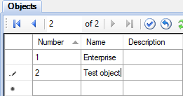
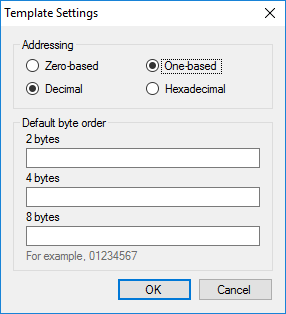
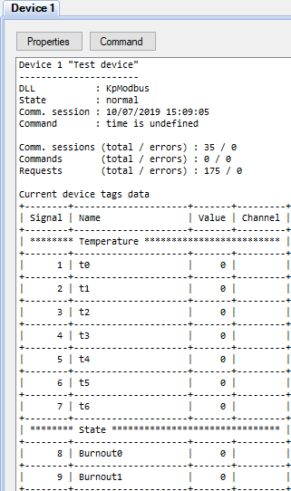
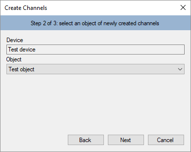
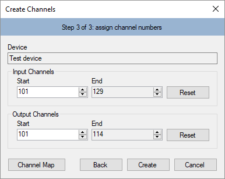
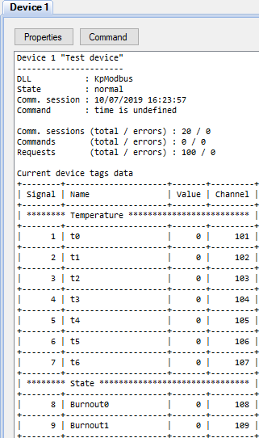
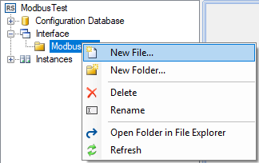
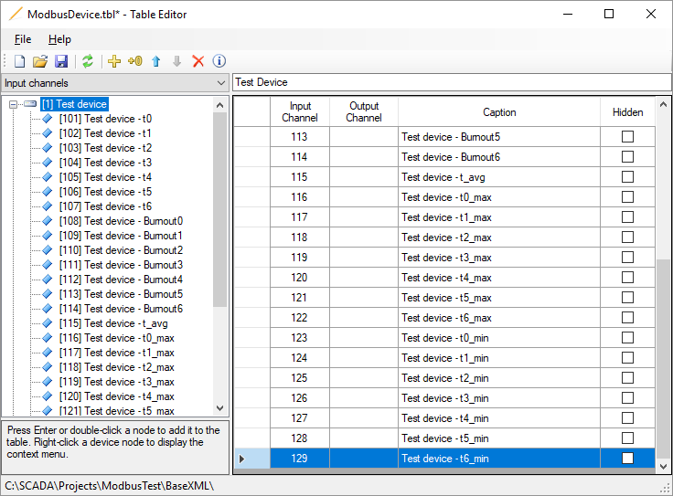
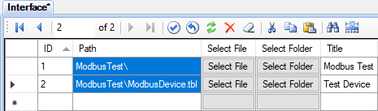
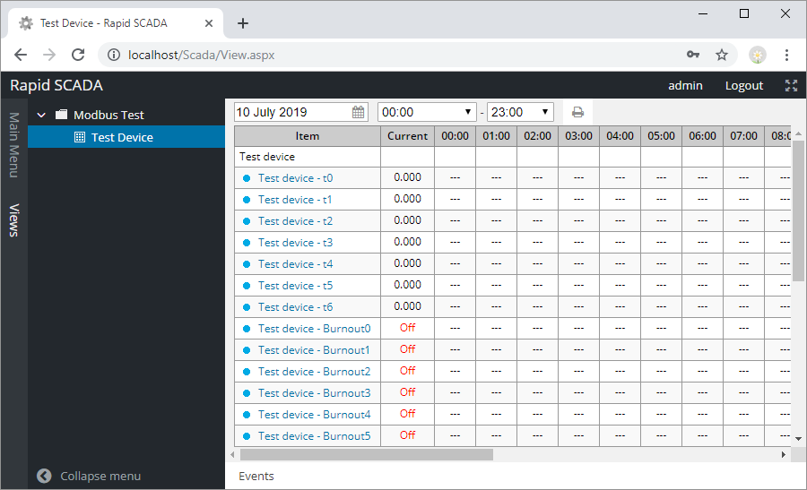

Fugire 1. Creating a project
This article describes how to configure communication with devices using Modbus protocol. Simple and robust, Modbus has since become a de facto standard communication protocol, and it is now a commonly available means of connecting industrial electronic devices (see Wikipedia). Rapid SCADA supports Modbus RTU, ASCII and TCP modes.
The general sequence of configuring:
The following is a step by step guide to setup a new Modbus device.
Run Administrator and click the New Project button. Enter a project name in the dialog and click the OK button. The setup process fully consistent with the article if the empty project named EmptyProject.en-GB is selected as a template.
Fugire 1. Creating a project
Expand the Configuration Database node, open the Objects table and add a new row for the object 2 "Test object" (see Figure 2). Click the  toolbar button to open the communication line wizard. Using the wizard, add the line 1 "Test line" (see Figure 3). After that click the
toolbar button to open the communication line wizard. Using the wizard, add the line 1 "Test line" (see Figure 3). After that click the  button and add the device 1 "Test device" (see Figure 4).
button and add the device 1 "Test device" (see Figure 4).

Fugire 2. Adding an object

Fugire 3. Adding a communication line

Fugire 4. Adding a device
Pay attention to the following fields when adding a device:
| Device type: | Modbus |
| Address: | Modbus address of your device, for example, 1 |
| Call number: | IP address, if the device is connected via Ethernet. Otherwise, leave blank |
| Communication line: | "Test line", which was recently created |
Open the Communication lines and Devices tables to check that the communication line and device were successfully added to the tables. Make sure that the corresponding communication line and device were created in the Communicator settings.
In the project explorer, go to the Communicator settings, expand the node of the just created communication line and double click the Line Parameters node. Configure the communication channel which settings are presented on the Main Parameters page (see Figure 5). In case of Modbus communication, the most common channel types are TCP client and Serial Port.

Figure 5. The main parameters of the communication line
If communication is performed via a serial port, the typical serial port parameters, depending on the Modbus type, are listed in the table below. In the RTU and ASCII modes, the baud rate specified in the Communicator settings and set on the devices must match. All devices connected to a one communication line must operate using the same Modbus type and with the same baud rate.
| Modbus RTU | Modbus ASCII | Modbus TCP |
|---|---|---|
| 8 data bits, Even parity, 1 stop bit |
7 data bits, Even parity, 1 stop bit |
- |
| 8 data bits, No parity, 2 stop bits |
7 data bits, No parity, 2 stop bits |
- |
Go to the Request Sequence page and select the "Test device" row (see Figure 6). If device polling time and period are not specified, the devices are polled cyclically. Commands are sent immediately after a poll is completed.

Figure 6. Device request sequence
Click the Properties button to open the device properties form (see Figure 7). In the form choose the Modbus type, which have to be specified in the device manual. In our case, Modbus TCP.

Figure 7. Device properties
Press the  button to select an existing device template, or click
button to select an existing device template, or click  to create a new template. When the create button
to create a new template. When the create button  or the edit button
or the edit button  is clicked, the Device Template Editor is shown (see Figure 8). This article uses the existing template KpModbus_Adam6015.xml, which was previously copied to the project directory C:\SCADA\Projects\ModbusTest\Instances\Default\ScadaComm\Config\
is clicked, the Device Template Editor is shown (see Figure 8). This article uses the existing template KpModbus_Adam6015.xml, which was previously copied to the project directory C:\SCADA\Projects\ModbusTest\Instances\Default\ScadaComm\Config\

Figure 8. Device template editor
Device template reflects the structure of Modbus packages. Requested data are combined into groups of elements. Each group has its name, data table, start address and element count. Each element is a tag of a device. Rapid SCADA identifies a tag by its signal number. A command is described by its name, data table and address. A command number identifies the command within Rapid SCADA.
Names of groups, elements and commands are arbitrary. The available data tables and element addresses are usually described in device manual. Depending on the manufacturer, addressing of elements can be zero-based or one-based, specified as decimal or hexadecimal numbers. By default, addresses start with 1 and represented as decimals. To switch template addressing, click the  button. Template settings dialog is opened (see Figure 9).
button. Template settings dialog is opened (see Figure 9).

Figure 9. Template settings
When editing the device properties (see Figure 7) is completed, click OK. The Command line field of the device parameters contains the template file name KpModbus_Adam6015.xml. Upload the project to the server by the  button.
button.
Double click the device node in the project explorer to check device status and data availability (see Figure 10). Data for this example was provided by Modbus Simulator.

Figure 10. Device data
In case of losing communication with the device, use a communication line log to realize the problem cause. To open the log, double click the Line Stats tree node and go to the Line Log page. Data packages can be decoded by Online Modbus Parser.
After communication with the device is established, create input channels and output channels in the configuration database. The most fast way to create channels is the wizard called by the  button. If several devices of the same type are added to the system, configuring can be accelerated by the channel cloning tool.
button. If several devices of the same type are added to the system, configuring can be accelerated by the channel cloning tool.
Perform the wizard steps (see Figures 11-13), selecting the communication line, device and object created earlier from the drop-down lists. To check the available channel numbers, use the channel map in step 3.

Figure 11. Creating channels. Step 1

Figure 12. Creating channels. Step 2

Figure 13. Creating channels. Step 3
Clicking the Create button creates channels. The channels are created automatically based on the device template that has been created and assigned to the device in the previous section of this article. To view created channels, open the Input channels > Test device table and the Output channels > Test device table. It is recommended to manually fill in the Quantity and Unit fields of the input channels and the Command values field of the output channels. However, in the case of the first experiment it is unnecessary. Useful to understand that the input channels are bound to the device tags using the Signal field. The output channels are bound to device commands in accordance with the Command number field.
After editing the configuration database is complete, upload the project to the server by the button. Open the device data page in the Communicator settings and make sure that the input channels are bound to the device tags. The Channel column must contain numbers of the created input channels (see Figure 14).

Figure 14. Device data bound to channels
As a result of above actions, data should be collected from the device and stored in the archive. It remains to customize user interface for an operator.
Consider creating a table view for the Webstation application. If it is necessary to display data on a scheme, the steps to create a view are similar.
Right click the Interface node of the project explorer. First, select New Folder in the context menu and create the ModbusTest folder. Then in the context menu of the created folder, select New File (see Figure 15). In the opened window, set the table view type, specify the filename ModbusDevice.tbl and click the OK button (see Figure 16).

Figure 15. Menu for creating a view

Figure 16. The view creation dialog
The created view file appears in the project explorer. Double clicking the file opens Table Editor. Enter a title and fill in the view items, as shown in Figure 17. Save the changes and close the editor.

Figure 17. Editing a view
After the view file is created, specify the parent directory and the file in the Interface table of the configuration database (see Figure 18).

Figure 18. Adding a view in the Interface table
Upload the project to the server by the button. Now start your browser and enter the address http://localhost/scada/. On the login form use admin / 12345 (see Figure 19). If the configuration carried out correctly, after logging in, you will see a table with the data obtained from the device, similar to Figure 20.

Figure 19. Login form

Figure 20. The Webstation application
Received element values may need a conversion. A device template allows choosing a number of bytes used by an element and order of bytes. These settings define an initial conversion. An additional conversion, if needed, is performed by SCADA-Server based on formulas of input channels in the configuration database.
The simplest conversion is a proportional which is described by the following formula:
X * (B - A) / 2N + A, where A and B are the bounds of the element values range, N – number of bits in value, X – received value.
Another commonly used conversion is two’s complement. See Wikipedia for the details. Formulas can be defined inline in input channel rows of the configuration database or separately by using the Formulas table. Using of formulas is described in this section.